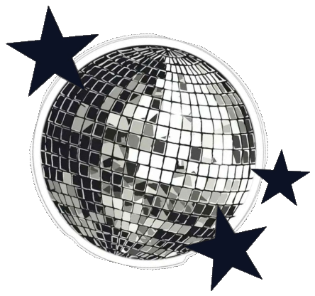

Sharon Elsa Sam
✦ About Me
I am an Artificial Intelligence and Data Science undergraduate student fascinated by how intelligent systems operate beneath high-level abstractions. I believe strong AI engineering is rooted in rigorous mathematical fundamentals—linear algebra, calculus, and probability—paired with clean, dependable backend architecture.
My focus is on transforming theoretical concepts into functional, real-world tools while maintaining clean code practices, clear documentation, and steady learning habits.
Core Areas of Curiosity
- Machine Learning & Deep Learning — Understanding gradient mechanics, loss landscape optimization, and model evaluation beyond library abstractions.
- AI Engineering & LLM Applications — Investigating how generative models integrate into reliable pipelines, structured APIs, and retrieval-augmented systems.
- Backend Systems & APIs — Designing clean application interfaces, structured data models, and resilient server-side workflows.
- Data Science & Forensics — Finding authentic signals within complex datasets, structured records, and timeline investigations.
- Creative Problem-Solving & Mini-Projects — Writing modular code, building desktop interfaces, and learning through deliberate, iterative practice.
✦ Connect
Open to discussions on AI engineering, machine learning foundations, open-source projects, and collaborative development.
✦ Tech Stack
Organized by domain, reflecting tools verified in my repositories alongside concepts I am actively studying:
1. Programming Languages
| Category | Technologies |
|---|---|
| Actively Using |
|
| Currently Learning |
|
2. AI, Machine Learning & Data Science
| Category | Technologies |
|---|---|
| Actively Using |
|
| Currently Learning |
|
3. Backend Development & Desktop
| Category | Technologies |
|---|---|
| Actively Using |
|
| Currently Learning |
|
4. Developer Tools & Workflow
| Category | Technologies |
|---|---|
| Actively Using |
|
| Currently Learning |
|
✦ Featured Projects
Featured work built from scratch, highlighting verified source code and genuine learning milestones.
A digital forensics case study and desktop investigation application.↗ github.com/chimchim-codes/RamjiRao-Speaking
Technologies: Python 3 · CustomTkinter · Pillow (PIL) · JSON Manifest Engine · Dynamic File Recovery
What It Does: An interactive forensic mystery environment (Nisha's Villa) where players examine location nodes, investigate physical and digital clues, reconstruct timeline inconsistencies, and decrypt protected files before making an accusation.
- Dynamic Case Pack Discovery: Maps, marker coordinates, and unlock rules are loaded dynamically from
case_manifest.jsonwithout hardcoded UI logic. - Forensic Recovery Engine: Detects corrupted or protected evidence files and guides investigators through restoration sequences.
- Encrypted Hint Engine: Protects solutions within an encrypted base64 payload (
hints.dat), decrypting clues in memory only when requested. - Persistent State Tracking: Records investigator notes, theories, and recovered files into structured JSON save files (
savegames/).
models.py, save_manager.py), and managing dependency graphs for evidence unlocks.
Focused programs exploring foundational programming, GUI design, and data structures.↗ github.com/chimchim-codes/Basic-Python-Projects
All three scripts are maintained in a single repository to track progressive Python fundamentals:
A. Rock, Paper, Scissors
📄 RockPaperScissors.pyRound-based iteration loops, random.choice() selection, input evaluation, conditional win/loss logic branching, and dynamic round score calculation.
.strip(), .upper()), defensive validation for non-integer inputs, and an optional probability-based computer opponent.
B. Password Generator
📄 passwrd_gen.pyAccepts user-specified lengths and uniformly samples characters from mixed alphanumeric and special symbol sets using random.sample().
secrets module (secrets.choice) for cryptographic randomness, and add toggles for user-selectable character classes.
C. Desktop To-Do List Application
📄 to_dolist.pyDesktop graphical interface using customtkinter and tkinter.Listbox. Allows users to add task entries and delete selected items from the listbox.
A scrapbook-inspired personal portfolio exploring layout and animation physics.↗ github.com/chimchim-codes/Portfolio · 🔗 portfolio-chimchim-codes.vercel.app
Technologies: Next.js · TypeScript · Tailwind CSS · Framer Motion
Explores tactile scrapbook aesthetics, responsive frontend components, and fluid UI animation physics.
✦ Currently Exploring
Active technical learning goals and weekly experiments: